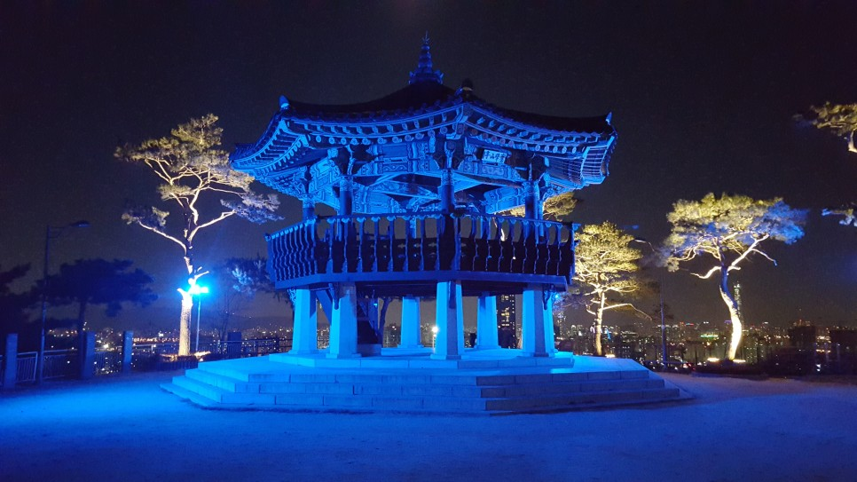
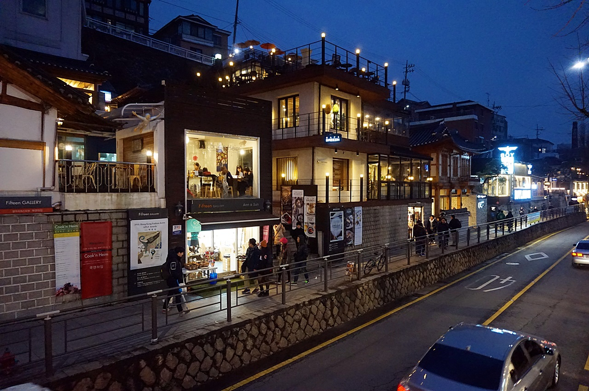

서울 야경 포인트 3곳
한여름밤의 낭만과 휴식
태양이 모습을 감추고 도시에 어둠이 내리면 대지를 달구던 한여름의 열기도 한풀 꺾인다. 한낮의 더위를 잊게 할 만큼 화려한 불빛이 눈에 들어오면 이내 숨이 멎는다. 여름밤만큼 야경을 감상하기 좋은 계절이 또 있을까. 아무데나 걸터앉아 도시의 밤을 하염없이 감상하기 좋은 곳, 각기 다른 분위기로 물드는 서울의 야경 포인트 3곳을 소개한다.
응봉산 공원 황금 물결 일렁이는 한강의 밤 풍경

다양한 색상의 조명이 비추는 산 정상위에 팔각정
응봉산은 해발 94m로 서울 성동구에 자리한 나지막한 산이다. 산 정상에는 팔각정이 있는 도심공원이 조성되었다. 이곳에서는 한강과 서울숲, 뚝섬, 잠실운동장 등 서울의 동북부 지역이 한눈에 조망된다. 일출과 일몰을 볼 수 있어 많은 이들이 찾으며, 매년 1월 1일 해맞이 행사가 열린다. 온 산이 개나리꽃으로 노랗게 물드는 봄날에는 개나리축제가 펼쳐진다.
여름이 되면 동네 주민을 비롯해 야경 사진을 찍는 사람들, 한밤의 데이트를 즐기려는 연인들이 응봉산 공원으로 밤나들이를 나온다. 이곳에서 바라보는 밤 풍경은 어디서도 볼 수 없을 만큼 특별하기 때문이다. 한강을 가로지르는 동호대교와 성수대교에 불이 켜지고, 퇴근길 자동차들이 붉은빛을 내며 꼬리를 물고 달린다. 높이가 다른 빌딩들이 등대가 되어주고, 서울숲의 나무들은 조명을 받아 푸르게 빛난다.
건국대학교 일감호 푸른 호수의 밤
건국대학교 입구 상권은 다른 대학가와 마찬가지로 언제나 젊음의 열기가 넘친다. 볼거리, 즐길거리, 먹을거리가 풍성해 낮이나 밤이나 즐거운 시간을 보낼 수 있다. 낮에는 학교 앞 상권이 주인공이라면, 밤에는 학교 안 작은 호수인 일감호가 주인공이다.
일감호는 젊음의 호수, 연인의 호수 등 애칭도 많다. 그와 관련된 이야기도 여럿 전해온다. 등나무 쉼터에 앉으면 저 멀리 지하철이 지나는 고가가 보이는데, 양방향으로 지하철이 서로 교차하는 장면을 보면 사랑이 이루어진다거나, 연인과 손을 잡고 홍예교를 지나면 영원한 사랑에 이른다는 등 캠퍼스의 낭만과 사랑에 관련된 이야기가 주를 이룬다.
삼청동길 오색찬란한 전통과 현대의 경계

한옥과 카페 테라스, 북악산이 어우러진 삼청동길의 해질녘
북촌길에서 삼청동을 바라보면 눈에 띄는 옥상 테라스 ‘카페 브리진(02-722-8120)’, 매주 토요일 저녁 7시면 다채로운 공연이 펼쳐지는 ‘휴플레이스(02-6925-2697)’ 등이 인기다. 삼청동길의 야경을 즐길 수 있는 시간은 그리 길지 않다. 상가가 밀집한 지역이자 주민들이 거주하는 주택가여서 대부분의 가게가 9시면 영업 정리를 시작한다. 덕분에 밤 10시가 되면 가로등만 켜진 한적한 동네로 변신한 삼청동을 만날 수 있다.
삼청동을 저녁에 둘러보는 것이 아쉽다면 오후 한나절 삼청동 여행을 즐겨보자. 아기자기한 갤러리와 개성 넘치는 소품을 판매하는 아트숍도 둘러보고, 삼청공원 숲속을 산책하는 것도 좋다. 삼청공원은 몇백 년 된 나무가 숲을 이루어 호젓한 시간을 보낼 수 있다. 공원 내에 놀이터를 비롯해 숲체험장, 숲도서관 등이 있어 가족 나들이 장소로도 좋다.